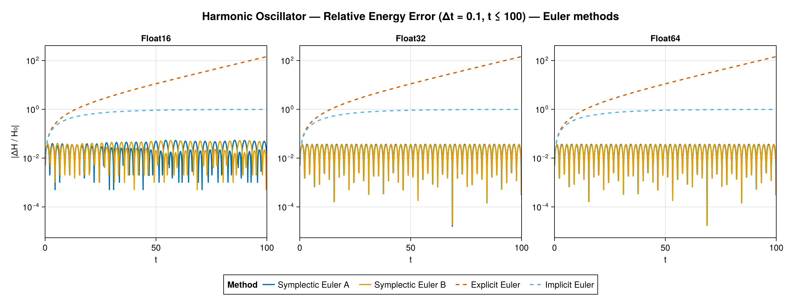
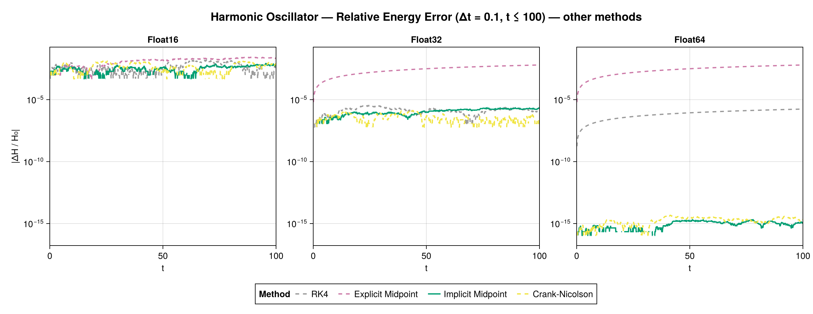
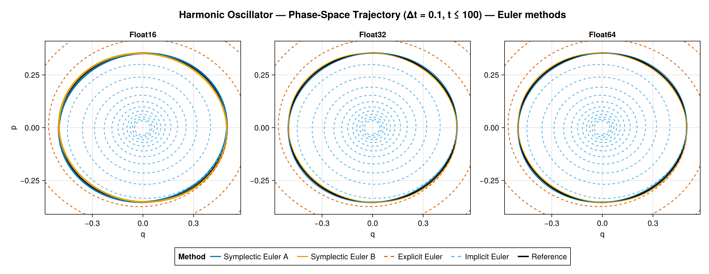
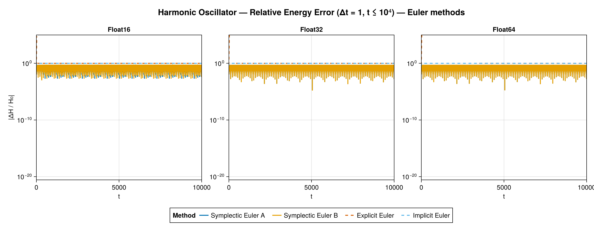
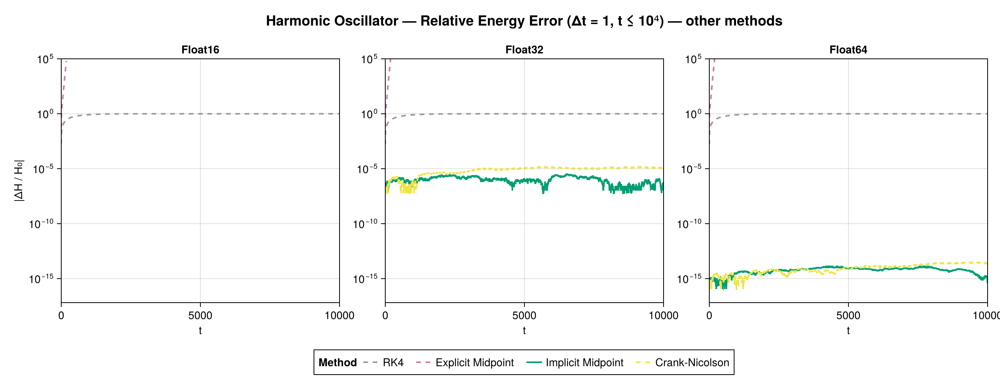
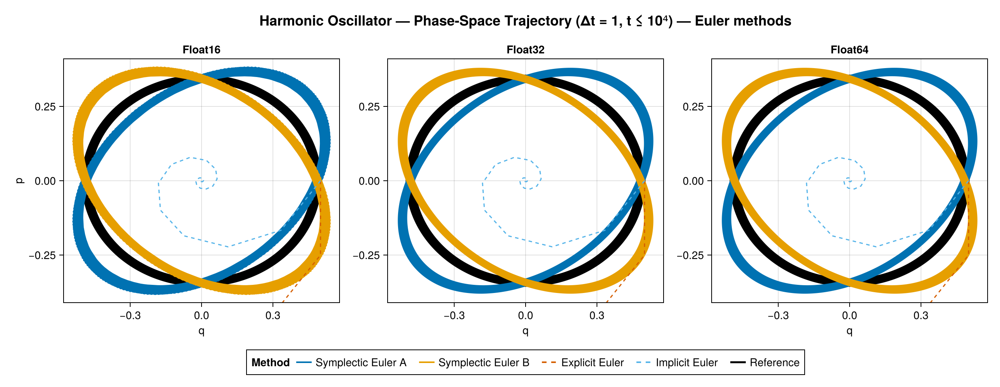

Harmonic Oscillator
The harmonic oscillator $H(q,p) = p^2/(2m) + k q^2 / 2$ is the reference test case: it is linear, it has a closed-form solution (so the solution error is measured against the analytic solution), and it is where the type-purity pipeline was first verified. All eight methods run at all three precisions and pass the precision-purity gate.
Short scenario (Δt = 0.1, t ≤ 100)
Energy error


The qualitative picture is textbook: explicit Euler grows without bound, implicit Euler dissipates towards a constant relative error of order one, and the symplectic Euler methods keep a bounded, oscillating energy error. Among the higher-order methods, implicit midpoint and Crank–Nicolson nearly conserve energy, with their noise floor set by the precision (≈ 1e-2 for Float16, 1e-6 for Float32, 1e-15 for Float64), while explicit midpoint drifts and RK4 sits in between.
Phase-space trajectory

In phase space the behaviour is unmistakable: the symplectic methods stay on a closed (slightly deformed) ellipse — the level set of a nearby modified Hamiltonian — the reference is the exact circle, explicit Euler spirals outward, and implicit Euler spirals inward.
Long scenario (Δt = 1, t ≤ 10 000)


At the coarse step and long horizon the contrast is dramatic: explicit Euler and explicit midpoint diverge exponentially (reaching ≈ 1e300 in Float64, clipped at the plot's 1e5 ceiling), while the symplectic methods and the implicit midpoint / Crank–Nicolson rules remain bounded over the entire $10^4$ time units. In Float16 the implicit methods fail once the time grid can no longer resolve Δt (see Findings).
